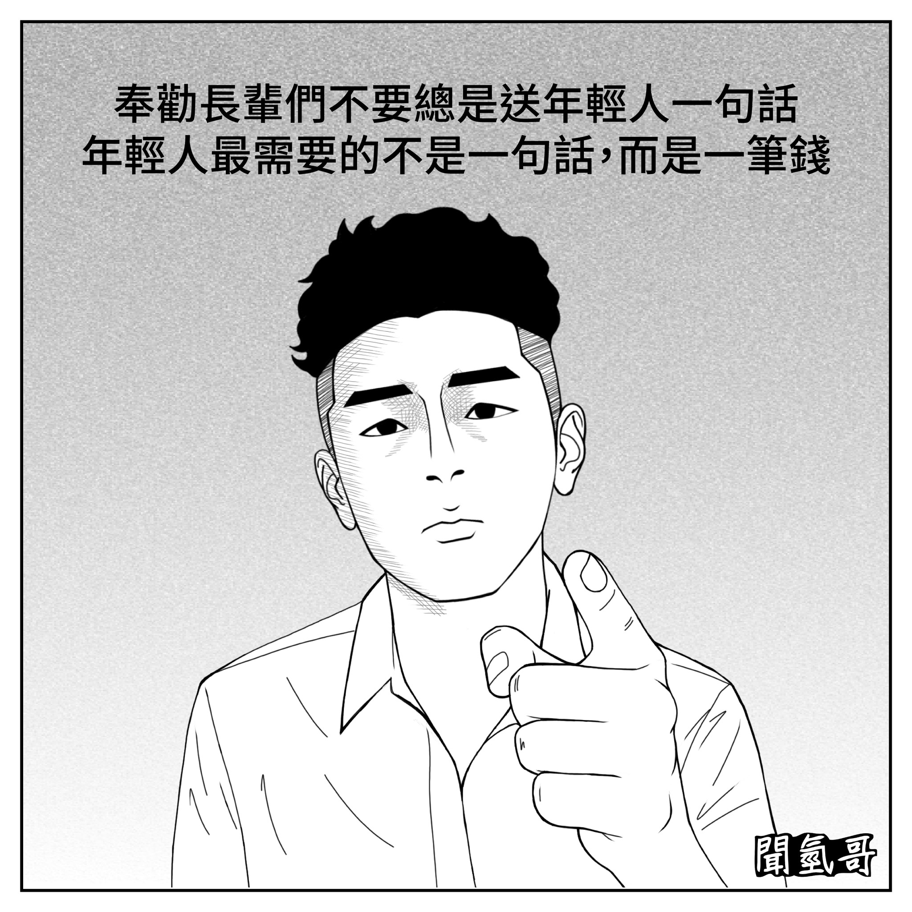

每個人都會用自己的經歷和價值觀看待世界，這也意味著，我們很難真正做到「換位思考」與「感同身受」。這幾年來，我從各大媒體報導的新聞事件、出現在社群媒體的各種言論、自己從小和長輩的互動中觀察到許多例子，這些都讓我越來越確信：
案例一：五桐號與《黑神話 悟空》風波
五桐號只是一家手搖飲料店，卻因為諧音「武統好」而被特定群體出征。《黑神話：悟空》是一款優秀的 3D 遊戲，許多遊戲實況主靠它刷流量，但部分意識形態濃厚的民進黨支持者卻因其來自中國就否定它的價值，甚至抵制它進入台灣。
這種行為難道不是另一種形式的「言論審查」和「文化封殺」？這和他們口中最鄙視的「小粉紅」與「中共教育」有何不同？正因為這些矛盾，才會有人戲稱民進黨是「
綠共」。
（註：五桐號和《黑神話：悟空》的參考來源為下方兩部影片）
案例二：容貌焦慮患者與長輩的雙重壓力
再舉個例子，這年頭不少人有容貌焦慮症，尤其是年輕人居多，並且罹患容貌焦慮症的這群年輕人的病情嚴重到他們吃不好、睡不好、做任何事都提不起勁，甚至不敢生養下一代，因為他們不想讓下一代經歷這種愁苦和遭遇校園霸凌、網暴等外貌可能會引發的問題。要不就是和家人出遊時經常在拍完照後開始納悶為何身高一米八五、有雙眼皮、立定跳的成績可接近三米、鏡中容貌清秀、已經過碩二的年紀但常被陌生人誤認為大一新鮮人的自己在相機中的臉怎麼這麼肥胖、膚質變差、嘴巴還歪歪的、雙眼皮變單眼皮，接著一整天都糾結在到底鏡子裡的自己還是相機裡的自己才是別人眼中的自己的問題上，而不是欣賞沿途看到的風景和吃到的美食。於是，對長相沒那麼在乎的人就會對這些患者說：
- 「不就是外貌而已？至於嗎？」
- 「你們年輕人花那麼多時間在打理自己的外貌上而非提高自己的內涵，你們也太膚淺了吧？」
- 「看開點，又不是每個人都靠臉吃飯」
- 「等你過了一段年齡就不會有異性在乎你的長相了」
- 「馬雲和林肯都長得不好看，但這不妨礙他們為世界做出貢獻」
甚至不少認為養育下一代是重責大任的長輩還對此現象表示：「現在的年輕人總是找各種理由不生小孩，真的是很不負責任，吧啦吧啦吧啦……」、並試圖將生養下一代才是負責任的行為的價值觀強加給這些有容貌焦慮症的晚輩然後告訴這些晚輩不要再在乎顏值這個非常「
膚淺」的東西。
可想而知，這些旁觀者說出來的言論不僅毫無說服力反而加重患者的病情，因為這些言論只是單方面的輸出與情緒勒索。他們沒有身處那種焦慮與痛苦中，卻自以為是地教訓別人放下執念，這難道不是一種心理上的獨裁？
P.S.與容貌焦慮無關，有一名父親認為絕後很可怕而要女兒生小孩（如下影片所示），甚至在女兒表示經濟能力不足以養小孩時對女兒說：「生了就會有辦法！以前人生活那麼苦，還不是可以生五、六個！」不用想也知道，在他沒有表示自己有足夠的錢可以幫助女兒養育外孫（女）且對女兒的處境無法感同身受卻一直單方面情緒勒索的情況下，他的言論又怎麼可能有說服力呢？所以各位長輩們，這世代的年輕人最需要的是你們的感同身受甚至經濟上的支援而不是自以為是的說教和情勒（如下插圖所示），如果你們不了解這點的話就不要驚訝為何孩子會封鎖你們的社交帳號甚至找理由不回家，而傳宗接代的代際衝突正好是接下來要講的案例。

案例三：反出生主義者與傳宗接代的價值碰撞
當年輕人選擇丁克生活，不少老人卻為「無法抱孫」感到焦慮。若換個角度，
反出生主義者也用同樣「站著說話不腰疼」的方式勸說這些老人放下執著：
- 「不就是絕後而已嗎？有啥大不了的？」
- 「就算你家族絕後，這世界照樣正常運作、不會因為你的血脈斷了而有任何損失，所以絕後到底有啥可怕的呢？」
- 「你一天到晚為了個人私慾強迫晚輩生小孩，所以你有要出錢幫忙養你的孫子嗎？沒有的話就閉嘴！」
- 「為何你那麼在乎傳宗接代呢？是因為你家裡有郭台銘的財富要繼承嗎？還是有彭于晏和金城武等明星的高顏值要繼承？」
- 「有志玲姐姐的財富和美貌再來煩惱傳宗接代的事情吧！對晚輩催生前怎麼不先檢討自己的經濟實力和DNA？」
- 「校園霸凌、網暴、詐騙、兒虐、性侵、行人地獄、食安問題到處都是，最近又多出了令不少家長頭疼的創意私房案，而且房價向來一直高得離譜，所以你怎麼捨得讓你的孫子來到這世上受苦呢？」
- 「為什麼你會有一種如果年輕人不生小孩他們老了就會後悔甚至要付出代價的錯覺呢？這年頭發生一堆白髮人送黑髮人的悲劇，像是新北市的割喉案、台南市的餵毒案、麥當勞的主管性侵工讀生害對方尋短，而且司法判決都在袒護加害者，這很明顯是在告訴我們養兒根本無法防老，難道你平日都沒有在看新聞嗎？更諷刺的是，曾在鏡頭前鼓勵老百姓多生小孩的某位政客不僅沒有以身作則還屁話連篇，可是她不但沒有因此而付出任何代價，而且還因為沒有親自經歷過懷孕和分娩的艱辛以及承擔孩子在成長過程中可能在學校被同學霸凌、在社群媒體上被陌生人網暴、在路上被酒駕撞死的風險而一輩子活得無拘無束。重點是，年輕人連自己能否活到老都是未知數，因此為何不活在當下並享受呢？再說，生個孩子然後替他捏冷汗幾十年，就只是為了人生最後的那幾年沒那麼痛苦，怎麼想都不如痛快幾十年並在最後幾年遭罪划算吧？所以年輕人不生孩子到底有啥好擔心的？」
- 「當你因為晚輩選擇丁克而感到焦慮時，你究竟是害怕晚輩會過得不好還是純粹擔心自己無法升格為阿公阿嬤？還是你認為年輕人必須和你們一樣辛苦一生這樣你對年輕人過得很舒服的嫉妒才會消失？」
就看這些老人會不會心想：「你們根本就不知道在有生之年升格為阿公（阿嬤）這件事對我而言意義有多大，卻只會拿你們自己的邏輯和價值觀來對我說教！」並感到委屈和憤怒？這就是為什麼換位思考真的很重要。
（註：創意私房案的描述和反出生主義者的心聲為下方兩部影片）
民進黨的三個盲點
最後，我要告訴民進黨的支持者以下三點，請理性看待：
一、批評你們不代表支持中共
我也不喜歡中共。看到舉報者神秘失蹤、活摘器官、人販子與碰瓷黨橫行的新聞，我也會慶幸自己不是那邊的人，但不代表我不能指出你們的問題。這不是舔共，而是對民主的監督與提醒。
（註：你們以不想成為國有器官的捐贈者為由反對統一，但下方的影片很清楚地描述在和平狀態下從兩千三百萬人之中成為國有器官的捐贈者與戰爭爆發期間從兩千三百萬人之中成為倖存者的差別，一定要認真看完）
二、國民黨的務實與民進黨的理想衝突
你們痛恨國民黨反對台獨，但從現實來看，他們擔心的是戰爭，不是價值。
瑞士曾發生一位來自中國大陸、名為
范宇豪的留學生由於不滿自己就讀的大學舉辦
台灣獨立的講座而在當地持刀闖進幼兒園傷害三名無辜孩童的事件並震驚全球，更何況他們那邊訓練有素的職業軍人和受過高等教育的軍事武器研發工程師之中也有不少像
范宇豪這樣的
小粉紅，所以台獨引起戰爭的機率怎麼可能會小呢？
所以民進黨追求理想主義不是不行，但在絕對力量面前，你能做自己嗎？中國大陸在軍事力量上遠勝台灣，但這不是誰的武力比較強的問題，而是因為戰爭中根本就沒有所謂的贏家。父母花了二十幾年的時間辛苦把你養大，是要你為社會做出貢獻，而不是要你去前線替這些口是心非的政客和資本家送死和濫殺無辜！
（註：下方的影片就是對台海戰爭可能帶來的影響的描述）
三、文化≠共產黨
你們之中也有人表示要抹除中國文化，說中國文化是一坨屎，甚至有人還因為人工智慧認同中國文化而感到疑惑和不解並截圖給我這個非民進黨支持者看，但是流傳幾千年的中國文化和才成立一世紀左右的中國共產黨到底有啥關係？
美國有不少唐人街、中國餐館，華裔美國人的數量達五百萬以上，詠春拳更是美國特種兵的必修課，不少非華裔的美國人在華裔熟人的影響下也會過農曆新年、端午節、中秋節、元宵節等傳統中國節日並品嚐湯圓、月餅、粽子、紅燒牛肉米線、揚州炒飯、蒜泥白肉、麻婆豆腐、蔥爆牛肉、客家小炒等傳統中國美食和學習書法與武術等傳統中國精緻文化，全球各地也有不少美式中餐連鎖店例如Panda Express、PF Chang’s China Bistro、China A Gogo、Nice Day、Pei Wei Asian Kitchen、Wow Bao、Chinese Gourmet Express、Leeann Chin、Manchu Wok等，美國人自己還製作出《功夫熊貓》這部以武俠世界為背景且風靡全球的動畫系列，Mortal Kombat裡面的Sub Zero、Liu Kang和Street Fighter裡的Chun Li等非中國人創作的高人氣角色設定上也是華人，而林正英在電影中扮演的茅山道士也是中國文化的一部分並且如今在網路上依舊很受歡迎。
總之，這些文化魅力讓全世界著迷，和共產黨完全無關。
（註：下方的兩部影片就是對美式中餐連鎖店和詠春拳的描述）
結語：我們都該學會「不當獨裁者」
人們總喜歡在道德與政治上自居高位，但事實上，我們很可能在無形中扮演著壓迫者的角色。
無論你是長輩還是年輕人、支持藍還是綠、贊成生育還是選擇丁克，
都應該學會尊重他人、理解差異，而不是把自己的觀點當作唯一的真理。
這不是誰對誰錯的問題，而是
我們是否還願意保有一點謙卑與自覺，因為我也不想成為自己批評的那種人。
註：